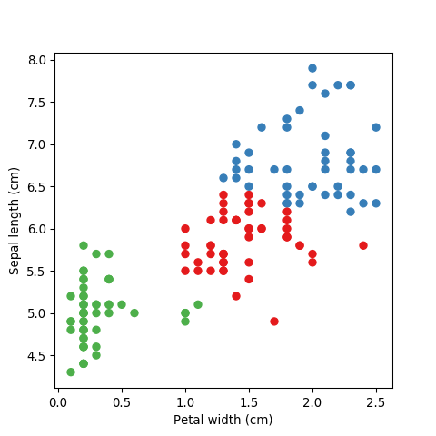
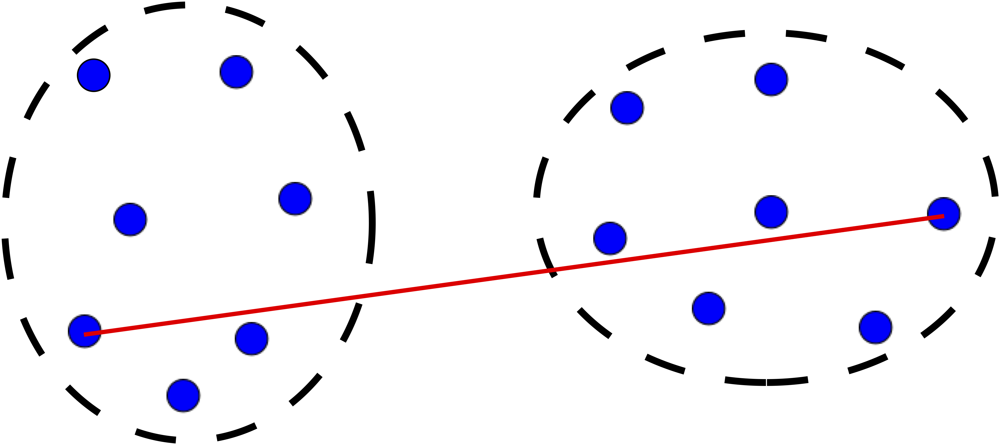
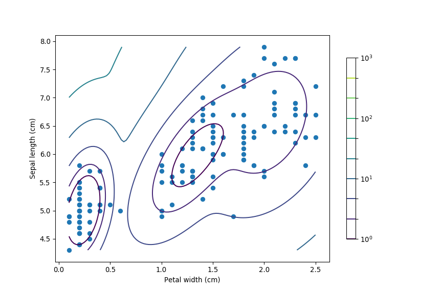
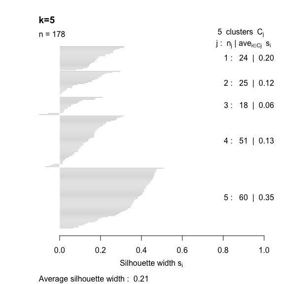
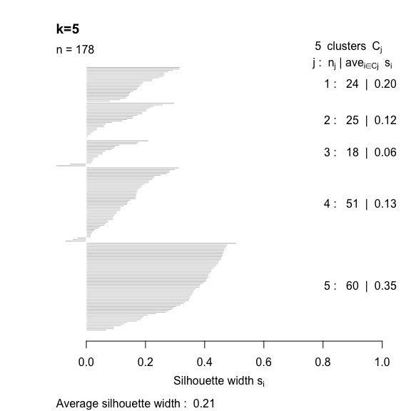

2 Clustering
2.1 Motivation
The image above is from a microarray experiment 1. The intensity of each dot represents gene expression of a single gene (how “active” the gene is) for a particular individual/sample. The resultant data is therefore a big matrix of numbers, where each column represents a gene and each row an individual/sample.
There are two questions of interest:
- Which genes are co-regulated, that is, behave in the same way?
- Which individuals are similar to each other, that is, have a similar gene expression profile?
In both cases we want to discover some underlying structure in unlabelled data. Structure means patterns in the data that are sufficiently different from pure unstructured noise. Here we introduce clustering, a class of unsupervised learning methods that try to answer these questions.
2.2 What is clustering?
The goal of clustering is to find groups that share similar properties. The data in each group should be similar (minimise intracluster distance), but each cluster should be sufficiently different (maximise intercluster similarity).
2.3 What problems can clustering solve?
Clustering is particularly useful in applications where labelling the data is very time consuming/expensive.
Gene expression: discovering co-regulated genes.
Biological systematics: finding organisms sharing similar attributes.
Computer vision: segmenting a digital image for object recognition.
Epidemiology: identifying geographical clusters of diseases.
Medical imaging: differentiating between tissues.
Mathematical chemistry: grouping compounds by topological indices.
Market basket analysis: determining which group of items tend to be bought together.
Cybersecurity: detecting fraudulent activity.
… and much more!
2.4 Types of clustering methods
Partitional: the feature space is partitioned into \(k\) regions e.g \(k\)-means.
Hierarchical: iteratively merging small clusters into larger ones (agglomerative) or breaking large clusters into smaller ones (divisive).
Distribution-based: fit \(k\) multivariate statistical distributions e.g Gaussian mixture model (GMM).
2.5 Similarity measures
Most clustering methods rely on distance metrics that quantify how close two observations are. There are several ways to define this distance, which has a direct effect on the clustering result.
The Euclidean distance (think Pythagoras theorem) is depicted below, together with the Manhatttan distance (named after the journey a taxi has to follow in grid-like streets of cities like Manhattan).

The correlation coefficient is also another popular way to measure similarity.
There are various other distance metrics, please see dist in R or pdist in Python.
In this introductory workshop we will focus on continuous features, but be aware that distance measures
for categorical variables exists, such as, the Jaccard index,
Gower distance and polychoric correlation.
2.6 The Iris dataset
To showcase some of the clustering methods, we will use the popular Iris dataset. The data set consists of 50 samples from three species of Iris flower (I. setosa, I. virginica and I. versicolor). Each flower is quantified by four measurements, length and width of sepal and petal.
Let us load this dataset:
Sepal.Length Sepal.Width Petal.Length Petal.Width Species
1 5.1 3.5 1.4 0.2 setosa
2 4.9 3.0 1.4 0.2 setosa
3 4.7 3.2 1.3 0.2 setosa
4 4.6 3.1 1.5 0.2 setosa
5 5.0 3.6 1.4 0.2 setosa
6 5.4 3.9 1.7 0.4 setosa# The iris dataset is available from the sci-kit learn package
from sklearn import datasets
iris = datasets.load_iris()
# Print the first 6 rows
# Sepal Length, Sepal Width, Petal Length, Petal Width
iris.data[:6, ]array([[5.1, 3.5, 1.4, 0.2],
[4.9, 3. , 1.4, 0.2],
[4.7, 3.2, 1.3, 0.2],
[4.6, 3.1, 1.5, 0.2],
[5. , 3.6, 1.4, 0.2],
[5.4, 3.9, 1.7, 0.4]])2.7 \(k\)-means
Arguably the most widely used partitioning clustering method. The feature space is divided into \(k\) regions as follows:
Select \(k\) centroids at random.
Compute the Euclidean distance between centroids and each data point.
Assign each data point to the closest centroid.
Compute new centroids; the average of all data points in that cluster.
Repeat steps 2 to 4 until data points remain in the same cluster or some maximum number of iterations reached.
Note: \(k\)-means clustering should only be used with continuous data!
For visualisation purposes let’s just use two features of the Iris dataset; sepal length and petal width.
# Fit k-means model
k <- 3
mdl <- kmeans(x=iris[, c(1, 4)], centers=k)
# Associate a colour with each cluster
library(RColorBrewer)
COL <- seq(k)
names(COL) <- brewer.pal(n=k, 'Set1')
# Plot results
plot(iris[, 4], iris[, 1], pch=19, col=names(COL[mdl$cluster]),
xlab='Petal width (cm)', ylab='Sepal length (cm)')
# Fit k-means model
from sklearn.cluster import KMeans
k = 3
mdl = KMeans(n_clusters=k, n_jobs=-1) # -1 uses all cores
mdl.fit(X=iris.data[:, [0, 3]])
# Associate a colour with each clusterfrom palettable.colorbrewer.qualitative import Set1_3
colDict = {0: Set1_3.hex_colors[0], 1: Set1_3.hex_colors[1], 2: Set1_3.hex_colors[2]}
myCol = [colDict[i] for i in mdl.labels_]
# Plot results
import matplotlib.pyplot as plt
plt.scatter(iris.data[:, 3], iris.data[:, 0], c=myCol)
plt.xlabel('Petal width (cm)')
plt.ylabel('Sepal length (cm)')
| Pros | Cons |
|---|---|
| Simple and intuitive | \(k\) needs to be specified a priori |
| Computationally inexpensive/fast | Only applicable for continuous data where a mean is defined |
| No guarantee of a global optimum solution |
2.8 Agglomerative hiearchical clustering
In agglomerative hierarchical clustering small clusters are iteratively merged into larger ones. The clustering strategy is as follows:
Assign each datum as its own cluster.
Compute the distance between each cluster.
Merge the closest pair into a single cluster.
Repeat steps 2 to 3 until all clusters are merged together.
Step 3 is key, the distance metric and linkage function dictate the final result. The linkage function specifies how the inter-cluster distance is computed. There are various options:
Centroid: mean of data points (same as in \(k\)-means).
Single: distance between closest pair of points.

Complete: distance between furthest pair of points. 
Average: mean pairwise distance between all points.

The distance can be computed using any similarity measure introduced previously.
# Compute distance matrix
d <- dist(x=iris[, c(1, 4)], method='euclidean')
# Perform agglomerative hierarchical clustering
# Use 'average' link function
mdl <- hclust(d=d, method='average')
# Plot resultant dendrogram
plot(mdl, cex=0.6)
from scipy.spatial.distance import pdist
from scipy.cluster.hierarchy import linkage, dendrogram
# Compute distance matrix
d = pdist(X=iris.data[:, [0, 3]], metric="euclidean")
# Perform agglomerative hierarchical clustering
# Use 'average' link function
mdl = linkage(d, method='average')
# Plot resultant dendrogram
plt.figure(figsize=(9,6))
dendrogram(mdl)The number at the end of each branch corresponds to the observation row number.
| Pros | Cons |
|---|---|
| No need to specify \(k\) | Can be computationally expensive |
| Sub-groups within larger clusters can be easily identified | Interpretation is subjective. Where should we draw the line? |
| Dendrograms let us visualise results irrespective of number of features | Choice of distance method and linkage function can significantly change the result |
2.9 Gaussian mixture model (GMM)
The GMM is a simple but powerful model that performs clustering via density estimation. The features’ histogram is modelled as the sum of multiple multivariate Gaussian distributions. Suppose we only had access to one feature, a GMM with \(k=2\) would look something like this:
The blue dashed lines represent the two individual univariate Gaussians, whilst the black line depicts the combined model. We can extend this to more features by using multivariate Gaussians. Mathematically this can be expressed as follows:
\[ p(x) = \sum_{i=1}^k \pi_i \mathcal{N}(x|\mu_i, \Sigma_i)\\ \sum_{i=1}^k \pi_i = 1 \] The Expectation-Maximisation (EM) algorithm is used to estimate the parameters \(\pi_i\) (known as mixing coefficients), \(\mu_i\) and \(\Sigma_i\).
Package 'mclust' version 5.4.5
Type 'citation("mclust")' for citing this R package in publications.# Fit Gaussian Mixture Model
k <- 3 # no. of clusters
mdl <- Mclust(data=iris[, c(4, 1)], G=3)
# Plot results
plot(mdl, what='classification',
xlab='Petal width (cm)',
ylab='Sepal length (cm)')
import numpy as np
from matplotlib.colors import LogNorm
from sklearn.mixture import GaussianMixture as GMM
# Fit Gaussian Mixture Model
k = 3 # no. of clusters
mdl = GMM(n_components=3)
mdl.fit(X=iris.data[:, [3, 0]])
# Compute probability distribution function at each point on a girdx = np.linspace(np.min(iris.data[:, 3]), np.max(iris.data[:, 3]), 100)
y = np.linspace(np.min(iris.data[:, 0]), np.max(iris.data[:, 0]), 100)
X, Y = np.meshgrid(x, y)
XX = np.array([X.ravel(), Y.ravel()]).T
Z = -mdl.score_samples(XX)
Z = Z.reshape(X.shape)
# Plot results
hPlot = plt.contour(X, Y, Z, norm=LogNorm(),
levels=np.logspace(0, 3, 10))plt.scatter(iris.data[:, 3], iris.data[:, 0])
plt.xlabel('Petal width (cm)')
plt.ylabel('Sepal length (cm)')
| Pros | Cons |
|---|---|
| Intuitive interpretation | \(k\) needs to be specified a priori |
| Computationally inexpensive | Strong assumption on the distribution of the feature space (multivariate Gaussian) |
| No guarantee of a global optimum solution | |
| Fails when number of features is much greater than observations |
GMMs offer a “soft” clustering approach, where every observation is part of every cluster but with varying levels of membership.
2.10 Determining the “correct” number of clusters
One of the biggest questions when it comes to clustering is “How many clusters do I have?”. The number of clusters \(k\) cannot be determined exactly, because the observations are unlabelled, so \(k\) is inherently ambiguous. Moreover, similarity is quite subjective and often we cannot define a clear cut-off.
For example, suppose that as part of a public health exercise we want to cluster a large group of individuals based on their health. Health is a multifaceted concept and cannot be observed directly; instead we measure various biomarkers, like body mass index (BMI), cholesterol levels, body composition, resting metabolic rate, etc. Although we would be able to differentiate between individuals at the two extremes (i.e athelete vs couch potato), most people will sit somewhere on a continuum. There isn’t a clear “line”, that once crossed an individual goes from being healthy to a bit unhealthy or moderately unhealthy etc. The number of clusters is therefore somewhat dictated by the problem at hand and the type of questions we’re trying to answer.
Nevertheless, there are various metrics that one can use to estimate the underlying number of clusters:
- Recall that the objective of clustering is to minimise the intracluster distance and maximise the intercluster similarity. Thus, we can plot the within and between clusters sum-of-squares distances as a function of \(k\). As we increase the number of clusters, there will be a point where the sum-of-squares distances will only change marginally, that is, adding more clusters does not improve these metrics significantly. The number of clusters is chosen to be the point at which the curve “plateaus” (5 in the synthetic example below). This is known as the “elbow criterion”. Please refer to the R or Python documentation on how to access these metrics.

- The silhouette width quantifies how similar an observation is to its own cluster compared to other clusters. This measure ranges from -1 (not compatible with that cluster) to 1 (extremely likely to be part of that cluster). The suggested configuration is the one that maximises the average silhouette width (3 in the synthetic example below). Please refer to the R or Python documentation on how to compute and plot these metrics.
- For distribution-based methods, choosing \(k\) can be framed as a model selection problem. We can plot the Akaike Information Criterion (AIC), Bayesian Information Criterior (BIC) or other information criterion measures. As we increase the number of clusters, there will be a point where the model fit will only improve marginally or start to decrease. The number of clusters is chosen to be the point at which the curve “plateaus” (the “elbow criterion”; 5 in the synthetic example below). Please refer to the R or Python documentation on how to compute these metrics.

There are myriad other metrics available in the literature, some related to specific clustering algorithms. You will also encounter methods that claim to automatically discover the optimal number of clusters for you. Although, this can be true in a mathematical sense, this estimate will still be based on various underlying assumptions and hyperparameters.
These cluster validity measures only give us a ballpark range for the “correct” number of clusters. Ultimately one needs to make use of prior knowledge to determine whether the number of clusters are practically relevant and if they make sense. For example, how many different phenotypes are you expecting in your population?
2.11 Tasks
2.11.1 Simulated data
Let’s start to get a feel for these clustering algorithms by simulating some data:
library(MASS) # mvrnorm (multivariate normal)
# Set simulation parameters
N <- 50 # no. of data points in each cluster
covMatrix <- matrix(data=c(1, 0, 0, 2), nrow=2)
# Simulate clusters (assume same covariances for now)
set.seed(1034) # to reproduce results
clustA <- mvrnorm(n=N, mu=c(6, 4), Sigma=covMatrix)
clustB <- mvrnorm(n=N, mu=c(3, 9), Sigma=covMatrix)
clustC <- mvrnorm(n=N, mu=c(9, 9), Sigma=covMatrix)
# Join all the data together and plot
xTrain <- rbind(clustA, clustB, clustC)
plot(xTrain[, 1], xTrain[, 2], pch=19,
xlab='Feature 1', ylab='Feature 2')
from numpy.random import multivariate_normal, seed
# Set simulation parameters
N = 50 # no. of data points in each cluster
covMatrix = np.array([[1, 0], [0, 2]], dtype='float')
# Simulate clusters (assume same covariances for now)
seed(1034) # to reproduce results
clustA = multivariate_normal(mean=np.array([6, 4]), cov=covMatrix, size=N)
clustB = multivariate_normal(mean=np.array([3, 9]), cov=covMatrix, size=N)
clustC = multivariate_normal(mean=np.array([9, 9]), cov=covMatrix, size=N)
# Join all the data together and plot
xTrain = np.vstack((clustA, clustB, clustC))
plt.figure(figsize=(6,6))
plt.scatter(xTrain[:, 0], xTrain[:, 1])
plt.xlabel('Feature 1')
plt.ylabel('Feature 2')Perform \(k\)-means clustering by allowing \(k\) to vary from 2 to 6 .
- Plot the intra and intercluster sum-of-squares as a function of \(k\) and deduce the “true” number of underlying clusters.

Fit a Gaussian Mixture Model (GMM) by allowing \(k\) to vary from 2 to 6 .
- Plot the AIC and BIC as a function of \(k\) and deduce the “true” number of underlying clusters.
2.11.2 Gene expression
The file gene_expression.csv (all workshop datasets are available here),
contains the acute lymphoblastic leukaemia (ALL) dataset which was published in the following study
(see here and here).
The dataset contains normalised gene expression values (measured using microarray) for 128 patients
and 12,625 genes. The patients were diagnosed with either a B- or T-cell acute lymphocytic leukaemia.
Do not worry too much about the details (i.e what the genes are etc.), treat this dataset as a \(G \times N\) matrix where \(G\) is the total number of genes and \(N\) is the number of patients. We have access to the labels, type and stage of the disease (e.g B2). Thus, we can easily assess how well the clustering algorithm is doing, as we expect the B’s and T’s to cluster together.
import pandas as pd
xTrain = pd.read_csv('_data/gene_expression.csv', header=0, index_col=0)
print(xTrain.shape)(12625, 128)euclidean, but change the linkage method (e.g single, average) and
observe how the dendrogram changes.


average and change
the distance method (e.g euclidean, manhattan) and observe how the dendrogram changes.


2.11.3 Wine
The file wine.csv contains chemical analysis data of wines grown in the same region
in Italy but from three different cultivars (see here for details).
WineType Alcohol MalicAcid Ash AlcalinityAsh Magnesium TotalPhenols
1 A 14.23 1.71 2.43 15.6 127 2.80
2 A 13.20 1.78 2.14 11.2 100 2.65
3 A 13.16 2.36 2.67 18.6 101 2.80
4 A 14.37 1.95 2.50 16.8 113 3.85
5 A 13.24 2.59 2.87 21.0 118 2.80
6 A 14.20 1.76 2.45 15.2 112 3.27
Flavanoids NonflavanoidPhenols Proanthocyanins ColorIntensity Hue
1 3.06 0.28 2.29 5.64 1.04
2 2.76 0.26 1.28 4.38 1.05
3 3.24 0.30 2.81 5.68 1.03
4 3.49 0.24 2.18 7.80 0.86
5 2.69 0.39 1.82 4.32 1.04
6 3.39 0.34 1.97 6.75 1.05
OD280_OD315 Proline
1 3.92 1065
2 3.40 1050
3 3.17 1185
4 3.45 1480
5 2.93 735
6 2.85 1450 WineType Alcohol MalicAcid ... Hue OD280_OD315 Proline
0 A 14.23 1.71 ... 1.04 3.92 1065
1 A 13.20 1.78 ... 1.05 3.40 1050
2 A 13.16 2.36 ... 1.03 3.17 1185
3 A 14.37 1.95 ... 0.86 3.45 1480
4 A 13.24 2.59 ... 1.04 2.93 735
[5 rows x 14 columns]There are thirteen variables (Alcohol, MalicAcid, etc.), together with WineType, which specifies the type of wine.
Here, we are going to pretend we do not know that there are three types of wine, instead we’ll use
clustering methods to uncover this information.
One thing to notice with this data, is that the units vary greatly across variables. For example, Proline ranges
from 278 to 1680, whilst MalicAcid ranges from 0.74 to
5.8. So first we need to normalise the data, so that they’re on a common scale.
wineType <- xTrain$WineType # save for comparison
xTrain <- scale(xTrain[-1], center=TRUE, scale=TRUE)
print(head(xTrain)) Alcohol MalicAcid Ash AlcalinityAsh Magnesium TotalPhenols
[1,] 1.5143408 -0.56066822 0.2313998 -1.1663032 1.90852151 0.8067217
[2,] 0.2455968 -0.49800856 -0.8256672 -2.4838405 0.01809398 0.5670481
[3,] 0.1963252 0.02117152 1.1062139 -0.2679823 0.08810981 0.8067217
[4,] 1.6867914 -0.34583508 0.4865539 -0.8069748 0.92829983 2.4844372
[5,] 0.2948684 0.22705328 1.8352256 0.4506745 1.27837900 0.8067217
[6,] 1.4773871 -0.51591132 0.3043010 -1.2860793 0.85828399 1.5576991
Flavanoids NonflavanoidPhenols Proanthocyanins ColorIntensity Hue
[1,] 1.0319081 -0.6577078 1.2214385 0.2510088 0.3611585
[2,] 0.7315653 -0.8184106 -0.5431887 -0.2924962 0.4049085
[3,] 1.2121137 -0.4970050 2.1299594 0.2682629 0.3174085
[4,] 1.4623994 -0.9791134 1.0292513 1.1827317 -0.4263410
[5,] 0.6614853 0.2261576 0.4002753 -0.3183774 0.3611585
[6,] 1.3622851 -0.1755994 0.6623487 0.7298108 0.4049085
OD280_OD315 Proline
[1,] 1.8427215 1.01015939
[2,] 1.1103172 0.96252635
[3,] 0.7863692 1.39122370
[4,] 1.1807407 2.32800680
[5,] 0.4483365 -0.03776747
[6,] 0.3356589 2.23274072from sklearn.preprocessing import scale
wineType = xTrain['WineType'] # save for comparison
xTrain = scale(xTrain.drop(labels='WineType', axis=1),
with_mean=True, with_std=True)
print(xTrain)[[ 1.51861254 -0.5622498 0.23205254 ... 0.36217728 1.84791957
1.01300893]
[ 0.24628963 -0.49941338 -0.82799632 ... 0.40605066 1.1134493
0.96524152]
[ 0.19687903 0.02123125 1.10933436 ... 0.31830389 0.78858745
1.39514818]
...
[ 0.33275817 1.74474449 -0.38935541 ... -1.61212515 -1.48544548
0.28057537]
[ 0.20923168 0.22769377 0.01273209 ... -1.56825176 -1.40069891
0.29649784]
[ 1.39508604 1.58316512 1.36520822 ... -1.52437837 -1.42894777
-0.59516041]]Perform \(k\)-means clustering by allowing \(k\) to vary from 1 to 10 .
- Plot the intra and intercluster sum-of-squares as a function of \(k\) and deduce the “true” number of underlying clusters.

Perform silhouette analysis on the clusters obtained with \(k\)-means for \(k\) = 2 to 5.
- What’s the suggested number of clusters?
 
Nowadays microarrays have been largely replaced by sequencing technologies. However, the problem remains exactly the same↩